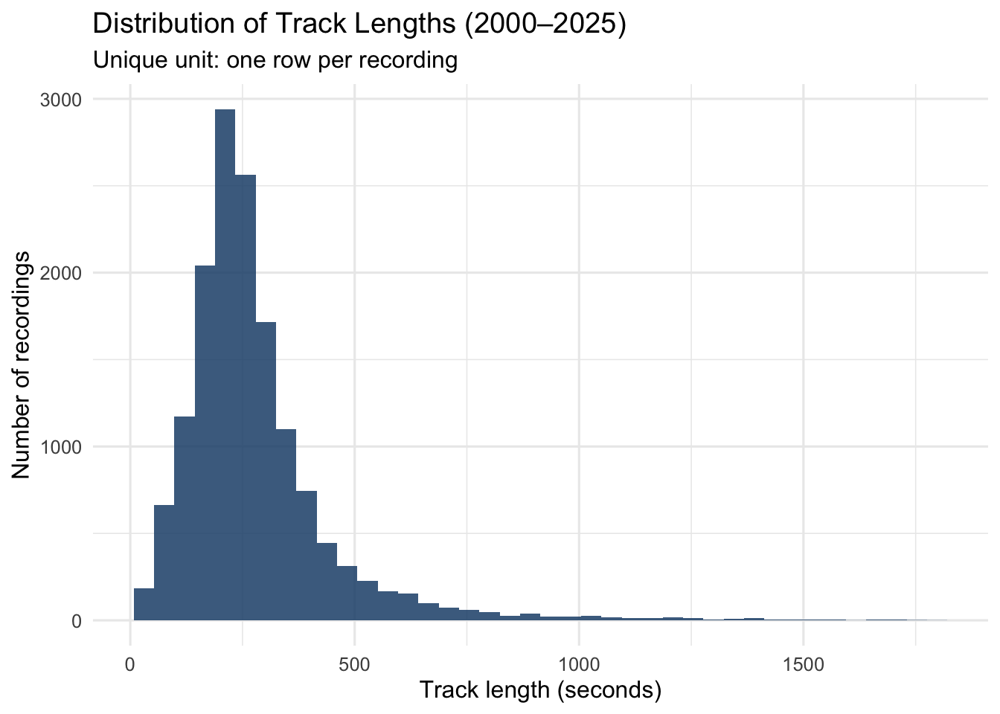
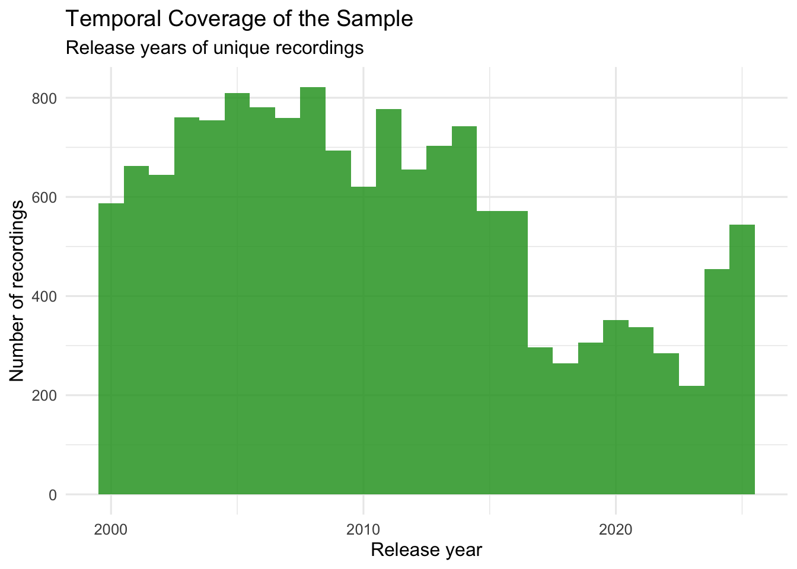

pacman::p_load(dplyr, purrr, stringr, readr, tibble, httr, jsonlite)
# Helper functions expected in R/helpers.R: mb_get(), safe_year(), get_first_artist_name(), classify_era()
source("R/helpers.R")Are Songs Really Getting Shorter in Recent Decades?
Computational Social Science Analysis of Music Metadata
2 Automated Data Collection (API)
Following the automated data collection decision tree (Sonmez, 2025), two sequential decisions were made:
- API vs. web scraping? → MusicBrainz provides a public RESTful API (WS/2) returning machine-readable JSON. API was used to enable “pure” data collection without legal ambiguity or HTML parsing fragility.
- Wrapper package vs. custom function? → While a community wrapper exists, the original one has not been maintained since 2017. For this analsyis, a custom request function (
mb_get) was developed to ensure full control over rate-limiting, reproducibility, and compatibility with this study’s offset-sampling strategy.
The collection pipeline is implemented in R/01_collect_data.R and R/helpers.R (not executed here for fast rendering).
Below, key methodological decisions are documented; full implementation is available in the submitted files. Output: data/raw/musicbrainz_raw.csv.
2.1 Reproducible Setup
2.3 Build the API Query (time-bounded + tag-bounded)
MusicBrainz search requires Lucene syntax for filtering. Combining tag and date constraints ensures results align with the study period (2000–2025) and target musical contexts.
build_query <- function(tag, start_date, end_date) {
sprintf('tag:"%s" AND firstreleasedate:[%s TO %s]', tag, start_date, end_date)
}2.4 Ethical Request Management and JSON Parsing (Custom Wrapper)
The custom mb_get wrapper (in R/helpers.R) centralises the HTTP request pipeline to ensure robust and ethical data collection. By encapsulating the httr::GET call, this function strictly implements two critical points:
Rate limiting (
Sys.sleep(1.1)): ≥1s pauses to avoid overloading the server.Identification: A custom User-Agent header is included to ensuring the script remains identifiable to the API provider.
mb_get <- function(url, query = list(), pause_sec = 1.1) {
Sys.sleep(pause_sec)
resp <- httr::GET(
url = url,
query = query,
httr::user_agent("SOCS0100-UCL-Student/1.0 (Track Length Analysis)")
)
httr::stop_for_status(resp)
txt <- httr::content(resp, as = "text", encoding = "UTF-8")
jsonlite::fromJSON(txt, simplifyDataFrame = TRUE)
}2.5 Reduce “top-of-search” Bias with Reproducible Offset Sampling
Because API results are usually ranked (e.g., by popularity), only taking the first few pages would over-represent highly visible recordings. Instead, the script lists all possible page starting points (offsets) from the total number of matches and randomly chooses a subset to query, so the sample spans more of the catalogue. By setting set.seed(122), the same randomly chosen pages are used every time the analysis is repeated. Finally, the pages_per_tag limits retrieval to 400 recordings per genre. This constraint balances statistical coverage with computational efficiency, ensuring the scraping remains ‘polite’ by strictly minimizing unnecessary server load.
set.seed(122) # reproducible sampling
limit <- 100. # max items per page (MusicBrainz API limit)
pages_per_tag <- 4 # manageable runtime
choose_offsets <- function(n_hits, limit, pages_per_tag, random = TRUE) {
offsets <- seq(0, max(0, n_hits - 1), by = limit)
# Sample offsets randomly to reduce ranking bias
if (random) sort(sample(offsets, size = min(length(offsets), pages_per_tag))) else offsets[1:pages_per_tag]
}2.6 Parse, Transform and Clean
API responses are semi-structured, nested JSON objects. The extract_recordings() function flattens key fields (including nested artist credits), converts milliseconds to seconds, and applies light bounds checks (30–1800 seconds; 2000–2025) to remove obvious noise. The raw dataset is then assembled, labelled (cluster + era), deduplicated at the recording_id × genre_tag level, and saved for downstream cleaning (R/02_clean_data.R) and Shiny integration.
extract_recordings <- function(rec, tag) {
tibble::tibble(
recording_id = rec$id,
title = rec$title,
length_ms = rec$length,
artist_name = purrr::map_chr(rec$`artist-credit`, get_first_artist_name),
first_release_date = rec$`first-release-date`,
release_year = safe_year(rec$`first-release-date`),
genre_tag = tag
) %>%
mutate(
title = stringr::str_squish(title),
artist_name = dplyr::if_else(is.na(artist_name) | artist_name == "", "Unknown", artist_name),
length_sec = length_ms / 1000
) %>%
# Light cleaning so the dataset is already Shiny-friendly.
# (Full wrangling happens in 02_clean_data.R)
filter(
!is.na(recording_id),
!is.na(length_ms),
length_ms > 0,
!is.na(release_year),
release_year >= 2000,
release_year <= 2025,
length_sec >= 30,
length_sec <= 1800
) %>%
distinct(recording_id, genre_tag, .keep_all = TRUE)
}
# Cluster and era labelling
raw <- bind_rows(rows) %>%
left_join(tag_map, by = "genre_tag") %>%
mutate(
genre_cluster = if_else(is.na(genre_cluster), "Other", genre_cluster),
era = classify_era(release_year)
) %>%
filter(!is.na(era)) %>%
distinct(recording_id, genre_tag, .keep_all = TRUE)
# Final assembly + save (performed in R/01_collect_data.R)
dir.create("data/raw", recursive = TRUE, showWarnings = FALSE)
readr::write_csv(raw, "data/raw/musicbrainz_raw.csv")3 Data Exploration and Contextualisation
This section turns the raw API export (data/raw/musicbrainz_raw.csv) into analysis-ready datasets and documents the final dataset structure (dimensions, types, variables). All wrangling is implemented in R/02_clean_data.R; the key steps and outputs are reproduced below. For social science significance, refer to the introduction.
3.1 Raw Dataset Overview
Each row in raw represents a recording × genre_tag returned by MusicBrainz (so the same recording can appear multiple times if it matched multiple tags). The table below reports total rows, columns, and distinct recordings.
The table below reports: total rows, total columns, and the number of distinct recording_ids.
raw_dims <- tibble::tibble(
rows = nrow(raw),
cols = ncol(raw),
unique_recordings = dplyr::n_distinct(raw$recording_id)
)
knitr::kable(raw_dims, caption = "Raw dataset dimensions (output of API collection).")| rows | cols | unique_recordings |
|---|---|---|
| 15234 | 10 | 14971 |
Tag-level analyses (RQ3) use the tagged unit: 15,234 rows (recording × tag).
Overall trend/era analyses (RQ1/RQ2) use a deduplicated unit later: 14,971 unique recordings (one row per recording_id).
3.2 Data Structure and Completeness
This diagnostic checks: (a) variable types as currently stored in the raw CSV, and (b) missingness for key analytic fields. The dataset consists primarily of character variables (identifiers, artist names, genre labels) and numeric variables capturing duration and release year. Crucially, missingness is essentially zero, so later trends are not driven by selective missing data
library(skimr)
skimr::skim(raw)| Name | raw |
| Number of rows | 15234 |
| Number of columns | 10 |
| _______________________ | |
| Column type frequency: | |
| character | 7 |
| numeric | 3 |
| ________________________ | |
| Group variables | None |
Variable type: character
| skim_variable | n_missing | complete_rate | min | max | empty | n_unique | whitespace |
|---|---|---|---|---|---|---|---|
| recording_id | 0 | 1 | 36 | 36 | 0 | 14971 | 0 |
| title | 0 | 1 | 1 | 286 | 0 | 14300 | 0 |
| artist_name | 0 | 1 | 1 | 53 | 0 | 5809 | 0 |
| first_release_date | 0 | 1 | 4 | 10 | 0 | 3908 | 0 |
| genre_tag | 0 | 1 | 3 | 22 | 0 | 43 | 0 |
| genre_cluster | 0 | 1 | 20 | 23 | 0 | 3 | 0 |
| era | 0 | 1 | 27 | 30 | 0 | 3 | 0 |
Variable type: numeric
| skim_variable | n_missing | complete_rate | mean | sd | p0 | p25 | p50 | p75 | p100 | hist |
|---|---|---|---|---|---|---|---|---|---|---|
| length_ms | 0 | 1 | 277777.10 | 172662.28 | 30000 | 182003.2 | 241877.50 | 323000 | 1798146.00 | ▇▁▁▁▁ |
| release_year | 0 | 1 | 2010.69 | 7.02 | 2000 | 2005.0 | 2010.00 | 2015 | 2025.00 | ▇▇▆▃▃ |
| length_sec | 0 | 1 | 277.78 | 172.66 | 30 | 182.0 | 241.88 | 323 | 1798.15 | ▇▁▁▁▁ |
Note on types: in the raw CSV, genre_cluster and era appear as character fields (because CSVs do not preserve factor classes). They are explicitly converted to factors during cleaning, thus the final summary in the variable dictionary below presents it as such.
3.3 Variable Dictionary
Unit of observation: Individual recording (musical track) retrieved as semi-structured JSON from the MusicBrainz /ws/2/recording/ endpoint.
Operationalization: Track length is measured as duration in seconds; temporal change via release year grouped into three sociotechnical eras; musical context via user-generated genre tags aggregated into three analytical clusters (Mainstream/Commercial, Underground/Alternative, Classical/Structured).
The table below documents all variables, distinguishing raw API fields from derived variables (computed during wrangling to support longitudinal and comparative analysis):
var_dict <- tibble::tibble(
variable = c(
"recording_id", "title", "artist_name",
"length_ms", "length_sec",
"first_release_date", "release_year",
"genre_tag", "genre_cluster", "era"
),
type = c(
"character", "character", "character",
"numeric", "numeric",
"character", "integer",
"character", "factor", "ordered factor"
),
description = c(
"MusicBrainz recording identifier (track-level ID).",
"Track title (whitespace-normalised for consistency).",
"First credited artist name (flattened from nested artist-credit).",
"Track duration in milliseconds (MusicBrainz 'length' field).",
"Track duration in seconds (derived: length_ms / 1000).",
"First release date string returned by the API (may be YYYY / YYYY-MM / YYYY-MM-DD).",
"Year extracted from first_release_date (used for time trends).",
"Genre tag used in the API query (sampling handle, not an objective genre label).",
"Broader analytical cluster mapped from genre_tag.",
"Sociotechnical era derived from release_year (3-era model)."
)
)
knitr::kable(var_dict, caption = "Variable dictionary for the MusicBrainz dataset.")| variable | type | description |
|---|---|---|
| recording_id | character | MusicBrainz recording identifier (track-level ID). |
| title | character | Track title (whitespace-normalised for consistency). |
| artist_name | character | First credited artist name (flattened from nested artist-credit). |
| length_ms | numeric | Track duration in milliseconds (MusicBrainz ‘length’ field). |
| length_sec | numeric | Track duration in seconds (derived: length_ms / 1000). |
| first_release_date | character | First release date string returned by the API (may be YYYY / YYYY-MM / YYYY-MM-DD). |
| release_year | integer | Year extracted from first_release_date (used for time trends). |
| genre_tag | character | Genre tag used in the API query (sampling handle, not an objective genre label). |
| genre_cluster | factor | Broader analytical cluster mapped from genre_tag. |
| era | ordered factor | Sociotechnical era derived from release_year (3-era model). |
3.4 Core Cleaning
Cleaning ensures consistency for analysis and Shiny, preventing silent errors from malformed text, type mismatches, or out-of-scope observations in these steps:
- Standardize text fields: Apply
str_squish()to title and artist_name to normalize whitespace, preventing duplicate labels. - Enforce variable types: Change
release_yearto integer and duration fields to numeric, preventing implicit type conversion errors during summarization or plotting. - Recompute derived variables: Recalculate era from
release_yearusingclassify_era()(defined inhelpers.R) to centralize era definitions and ensure consistency across scripts - Apply defensive filtering: Retain only valid analytic cases within study scope
era_levels <- c(
"Pre-Convergence (2000–2012)",
"Platform Emergence (2013–2016)",
"Dual Algorithmization (2017+)"
)
cluster_levels <- c(
"Mainstream/Commercial",
"Underground/Alternative",
"Classical/Structured",
"Other"
)
clean_tagged <- raw %>%
mutate(
# Text cleaning
title = stringr::str_squish(title),
artist_name = stringr::str_squish(artist_name),
# Type enforcement
release_year = as.integer(release_year),
length_ms = as.numeric(length_ms),
length_sec = as.numeric(length_sec),
# Recompute derived variables
era = classify_era(release_year),
era = factor(era, levels = era_levels, ordered = TRUE),
# Ensure cluster is never missing/blank
genre_cluster = dplyr::if_else(
is.na(genre_cluster) | genre_cluster == "",
"Other",
genre_cluster
),
genre_cluster = factor(genre_cluster, levels = cluster_levels)
) %>%
# Defensive filtering: keep only valid analytic cases
filter(
!is.na(recording_id),
!is.na(title) & title != "",
!is.na(release_year),
dplyr::between(release_year, 2000, 2025),
!is.na(length_sec),
dplyr::between(length_sec, 30, 1800),
!is.na(genre_tag) & genre_tag != "",
!is.na(era),
!is.na(genre_cluster)
) %>%
# Unit for RQ3: unique combination of track + tag
distinct(recording_id, genre_tag, .keep_all = TRUE)
post_clean_dims <- tibble::tibble(
rows = nrow(clean_tagged),
unique_recordings = dplyr::n_distinct(clean_tagged$recording_id)
)| rows | unique_recordings |
|---|---|
| 15234 | 14971 |
Output: clean_tagged (one row per recording × genre_tag; 15234 observations, 14971 unique recordings).
3.5 Define Units of Analysis (avoid double-counting)
Because a recording may appear under multiple tags, overall trends should not count the same track multiple times. The unique unit selects one row per recording_id using a stable rule (arrange(recording_id, genre_tag) %>% slice(1)), ensuring reproducibility.
clean_unique <- clean_tagged %>%
arrange(recording_id, genre_tag) %>%
group_by(recording_id) %>%
slice(1) %>%
ungroup()
unique_dims <- tibble::tibble(
rows = nrow(clean_unique),
unique_recordings = dplyr::n_distinct(clean_unique$recording_id)
)| rows | unique_recordings |
|---|---|
| 14971 | 14971 |
3.6 Descriptive Summaries (context)
These summaries verify that the dataset spans the intended time window and that track lengths fall in plausible ranges. They also provide baseline comparisons by era and cluster that are referenced later in interpretation.
summary_overall <- clean_unique %>%
summarise(
n_tracks = n(),
min_year = min(release_year),
max_year = max(release_year),
mean_len = mean(length_sec),
median_len = median(length_sec),
p25_len = quantile(length_sec, 0.25),
p75_len = quantile(length_sec, 0.75)
)
summary_era <- clean_unique %>%
group_by(era) %>%
summarise(
n = n(),
mean_len = mean(length_sec),
median_len = median(length_sec),
.groups = "drop"
)
summary_cluster <- clean_tagged %>%
group_by(genre_cluster) %>%
summarise(
n = n(),
mean_len = mean(length_sec),
median_len = median(length_sec),
.groups = "drop"
) %>%
arrange(desc(n))| n_tracks | min_year | max_year | mean_len | median_len | p25_len | p75_len |
|---|---|---|---|---|---|---|
| 14971 | 2000 | 2025 | 277.9697 | 242 | 182.735 | 323 |
| era | n | mean_len | median_len |
|---|---|---|---|
| Pre-Convergence (2000–2012) | 9326 | 288.6098 | 252.6065 |
| Platform Emergence (2013–2016) | 2588 | 291.2717 | 251.0000 |
| Dual Algorithmization (2017+) | 3057 | 234.2486 | 205.2500 |
| genre_cluster | n | mean_len | median_len |
|---|---|---|---|
| Classical/Structured | 5401 | 301.7616 | 257.453 |
| Underground/Alternative | 5012 | 302.6891 | 264.209 |
| Mainstream/Commercial | 4821 | 225.0081 | 214.626 |
Median track length is 242 seconds with substantial variation (IQR: 183–323s). Track length remains stable in Pre-Convergence and Platform Emergence eras (~252s median), but drops sharply to 205 seconds in Dual Algorithmization (2017+); a 16% decline suggesting platformisation pressures reshape production norms. This decline is most pronounced in Mainstream/Commercial tracks (215s median) versus Classical/Structured and Underground/Alternative genres (~260s), suggesting differential exposure to platform incentives across musical contexts.
3.7 Visual Diagnostics
These plots are checks for (a) plausible duration distribution and (b) full coverage of the 2000–2025 window.
p_len <- ggplot(clean_unique, aes(x = length_sec)) +
geom_histogram(
bins = 40,
fill = "#1F4E79",
alpha = 0.85
) +
labs(
title = "Distribution of Track Lengths (2000–2025)",
subtitle = "Unique unit: one row per recording",
x = "Track length (seconds)",
y = "Number of recordings"
) +
theme_minimal(base_size = 12)
p_year <- ggplot(clean_unique, aes(x = release_year)) +
geom_histogram(
bins = 26,
fill = "#2CA02C",
alpha = 0.85
) +
labs(
title = "Temporal Coverage of the Sample",
subtitle = "Release years of unique recordings",
x = "Release year",
y = "Number of recordings"
) +
theme_minimal(base_size = 12)
p_len
p_year

Track lengths are right-skewed, with most recordings between 150–350 seconds and a long tail of extended tracks.This motivates using medians alongside means to reduce outlier influence. Release years span 2000–2025, with higher density in earlier years, so analyses rely on within-year and within-era summaries rather than raw counts to reflect changes in typical track length rather than catalogue size.
4 Building an Interactive Dashboard with R Shiny
This section documents the design logic and analytical contribution of the interactive R Shiny dashboard, built from the cleaned and aggregated MusicBrainz dataset and fully reproducible via the app.R file. Its purpose is to support exploratory analysis of how track length changes over time and across musical contexts, with three interactive visualisations aligned to the research questions.
The dashboard uses a shared filtering system, so all visualisations respond consistently to user input.This allows users to move smoothly between macro-level trends and genre-specific contexts while keeping the underlying units of analysis coherent.
4.1 Visualisation 1
This visualisation plots yearly track-length summaries (median by default, mean optional) from 2000–2025, filterable by genre cluster or specific genre tags. A line chart is appropriate for identifying longitudinal trends, and the median is the default because it better represents the “typical” recording in a right‑skewed distribution where a long tail of extended tracks pulls the mean upward; users can toggle to the mean to inspect the impact of this skew directly.
Across the full dataset, track length gradually declines over time, with a pronounced drop after the mid‑2010s and the lowest values around 2020; although there is a modest recovery thereafter, lengths remain well below pre‑2015 levels. The pattern is clearer in medians than means, indicating that shortening reflects shifts in typical production norms rather than just changes in extreme values, thereby answering RQ1 at a high level.
4.2 Visualisation 2
The second visualisation compares track-length distributions across three sociotechnical eras using boxplots (Pre‑Convergence 2000–2012, Platform Emergence 2013–2016, Dual Algorithmization 2017+), which summarise medians, dispersion, and outliers and are therefore well suited to show how entire distributions shift between periods.
Track lengths are stable across the first two eras (medians around 250 seconds) but drop sharply after 2017 to roughly 205 seconds—a reduction of about 50 seconds (20%) accompanied by tighter clustering, indicating convergence toward standardised lengths. This contraction is most pronounced in Mainstream/Commercial genres, while Underground/Alternative tracks remain longer and more variable and Classical/Structured genres stay longest on average but exhibit modest shortening.
The timing of this structural break coincides with intensified playlist curation and the rise of short-form video as a discovery channel, implying that platform-level dynamics have reshaped track-length norms, particularly in commercially oriented styles; this visualisation thus deepens understanding of RQ2 by linking era-specific distributions to broader platformisation processes.
4.3 Visualisation 3 and further Analysis
The third visualisation compares yearly track-length trends across genre clusters, with an option to switch from cluster-level comparison to a single-genre trajectory by selecting a specific tag. Overlaying clusters enables direct comparison of stylistic dynamics, while tag-level drill-downs reveal how individual genres deviate from their parent cluster without overcrowding the plot.
Mainstream/Commercial tracks show the clearest and most consistent shortening over time, aligning with per‑stream money incentives and playlist-optimisation logics that favour shorter tracks in streaming-dominant genres such as hip hop and pop. Underground/Alternative tracks remain longer and more volatile, while Classical/Structured genres are longest on average and show only slight shortening, indicating weaker exposure to these platform incentives. Tag-level drill-downs highlight divergences: hip-hop subgenres (cloud rap, underground hip hop, trap) and dance/pop exhibit the steepest declines, consistent with youth-skewed audiences heavily exposed to attention‑fragmenting short-form video platforms and background listening contexts where rapid song changes sustain engagement. By contrast, rock, folk, and most classical genres show minimal shortening, suggesting partial insulation through album-oriented consumption and niche audience demographics, while jazz fusion even lengthens in recent years, hinting at resistance to standardisation pressures.
Together, these patterns clarify RQ3 by showing that the same platform infrastructure produces distinct track-length trajectories across musical scenes, thereby enriching substantive understanding of the MusicBrainz data source.
5 Critical Engagement with Copilot
GitHub Copilot was used as a collaborative coding assistant during data wrangling and Shiny development. I treated Copilot suggestions as drafts rather than authoritative solutions, evaluating them against the project’s research design, reproducibility requirements, and computational constraints.
5.1 Example 1: Faster scaffolding for repetitive code
Copilot was most useful for scaffolding repetitive code (e.g., summarise() blocks and Shiny UI elements), reducing time spent on syntax and freeing attention for methodological decisions. Its drafts were directionally correct but assumed fixed statistics, so the main learning came from refining them to match the app’s interaction logic and analytical design.
# Copilot-style scaffold (I then edited to match my naming + factor levels)
output$plot_overall <- renderPlot({
d <- clean_unique %>%
group_by(release_year) %>%
summarise(median_len = median(length_sec, na.rm = TRUE), .groups = "drop")
ggplot(d, aes(release_year, median_len)) +
geom_line() +
theme_minimal()
})# I added: filtering from inputs, mean/median toggle, point option, and stable x breaks.
output$plot_overall <- renderPlot({
stat_col <- input$stat
df <- data_unique_f() %>%
group_by(release_year) %>%
summarise(
median_len = median(length_sec, na.rm = TRUE),
mean_len = mean(length_sec, na.rm = TRUE),
.groups = "drop"
)
ggplot(df, aes(x = release_year, y = .data[[stat_col]])) +
geom_line(linewidth = 1.1, colour = "#1F4E79") +
{ if (isTRUE(input$show_points)) geom_point(size = 1.9, colour = "#1F4E79") } +
scale_x_continuous(breaks = scales::pretty_breaks(8)) +
theme_minimal(base_size = 12)
})5.2 Example 2: Resolving inconsistent variable naming without re-collecting data
Inconsistent genre cluster labels introduced during data collection caused Shiny plots to fail due to mismatched factor levels. Re-running the API pipeline would have been costly due to rate limits, so I used Copilot to design a post-hoc label standardisation step during cleaning. While Copilot initially proposed an over-complex solution, I simplified it into a small helper function that corrected labels defensively without dropping valid data.
standardise_cluster <- function(x) {
x <- stringr::str_squish(as.character(x))
x <- dplyr::if_else(is.na(x) | x == "", "Other", x)
dplyr::recode(
x,
"Commercial/Mainstream" = "Mainstream/Commercial",
"Structured/Classical" = "Classical/Structured",
.default = x
)
}This solution preserved all observations, ensured consistent factor levels across scripts, and allowed the Shiny app to render correctly without re-running the API pipeline.
6 Example 3: Improving Shiny robustness after earlier failures
Before standardisation, the Shiny app failed due to mismatched labels and missing files. Copilot suggested adding defensive checks, which I adapted to produce clear, reproducible error messages.
req_files <- c(
"data/final/musicbrainz_clean_unique.csv",
"data/final/musicbrainz_clean_tagged.csv"
)
missing <- req_files[!file.exists(req_files)]
if (length(missing) > 0) {
stop(
"Missing required file(s):\n- ",
paste(missing, collapse = "\n- "),
"\nRun R/02_clean_data.R first."
)
}References
Prey, Robert. 2020. “Locating Power in Platformization: Music Streaming Playlists and Curatorial Power.” Social Media + Society 6 (2). https://doi.org/10.1177/2056305120933291.